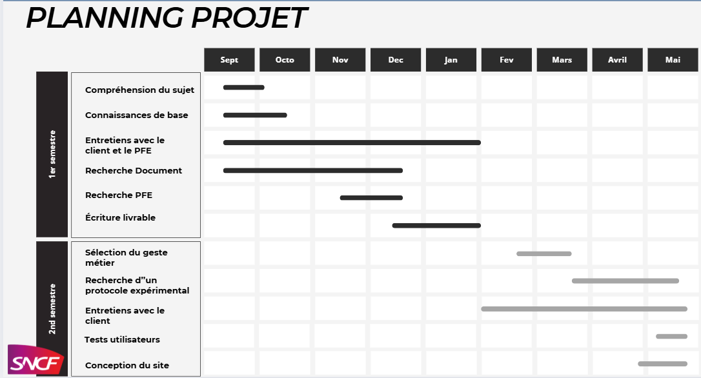

Le projet a été organisé autour de réunions régulières avec notre tutrice et le client, en moyenne une réunion toutes les deux semaines. L’organisation du travail s’est articulée autour des tâches suivantes :
Un planning a été défini pour répartir les différentes phases du projet, de la sélection du geste métier à l’analyse des résultats.
